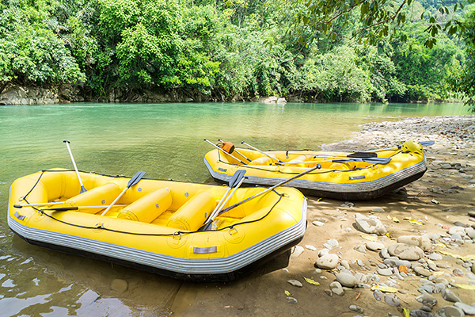
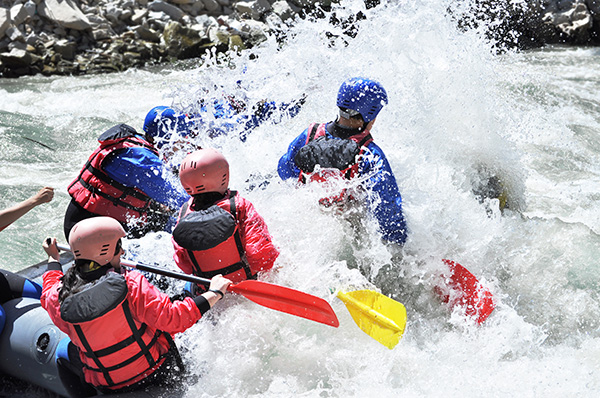
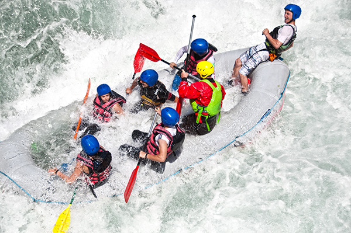
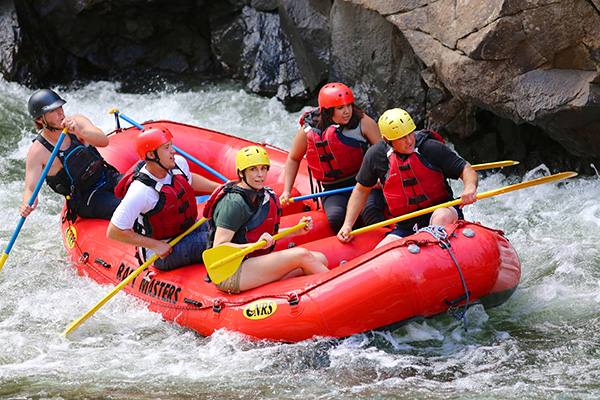

Our creed is adventure, our motto is courage, and our mission is to deliver unforgettable journeys down the river.


Our creed is adventure, our motto is courage, and our mission is to deliver unforgettable journeys down the river.
White water rafting began as daring river expeditions in the early 1800s and has since evolved into a global adventure sport. In 1811, explorers attempted to navigate Wyoming’s Snake River, but without proper equipment it was deemed too dangerous.

By the 1840s, rubber rafts were being built for surveying, laying the foundation for modern inflatable boats. In the mid‑20th century, rafting became recreational, with commercial trips and organized tours spreading worldwide. Today, rafting is both a thrilling pastime and a competitive discipline, enjoyed on rivers across the globe.




